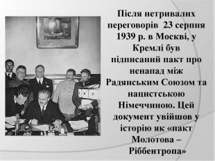
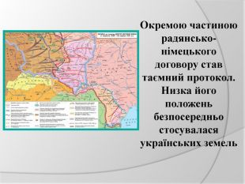

Радянсько-німецькі договори 1939 року
Мета:
 Розробка уроків. Історія України- Ознайомити учнів з основними подіями відповідного періоду історії.
-
Навчити учнів співставляти, аналізувати, критично оцінювати історичні факти і події правильно і чітко висловлювати власну думку,
аргументовано доводити її вірність. - Виховати у учнів почуття патріотизму, національної гідності, поваги до власної історії, толерантне ставлення до чужих поглядів і думок.
Завдання:
Визначити основні причини підписання радянсько-німецьких пактів, позитивні та незадовільні наслідки їх укладання для західноукраїнських земель;
ознайомити з політикою, яка проводилася у районах Західної України.
Тип:
Комбінований урок.
Обладнання:
Підручник Турченко Ф., Панченко П. Новітня історія України 11 кл., 2 частина.
Тематика реферативних повідомлень:
 Розробка уроків. Історія України- "Міжнародна ізоляція СРСР і політичне ігнорування радянської держави чи свідоме штовхання до союзу з Німеччиною"
- "Наступ СРСР на Західну Україну: прояв допомоги чи акт агресії"
- "Політика радянського керівництва щодо західноукраїнських земель і визволення від іноземної залежності чи дії спланованого геноциду".
Література для вчителя та учнів:
- Грицак Я. "Нарис історії України ХХ ст." - К.,1996 р.
- Орлов А. "СССР-Германия: август 1939-июнь 1941" - М., Знание, 1991
- Якушевський А. "Радянсько-німецький договір 1939 р. УІЖ, 1989, №9
- Волков С., Емельянов Ю. "До и после секретних протоколов" - М.,1990
- Семиряга М. "Україна: Нариси політичної історії. Перша половина ХХ ст." - К.,1993
- Трубайчук А. "Брудершафт двох диктаторів." - К.,1993
План:
- Укладання радянсько-німецького пакту про ненапад. Початок другої світової війни.
- Входження Бессарабії та Північної Буковини до СРСР, включення їх до складу УРСР.
- Радянізація західних областей України.
- Німецька окупація Лемківщини, Холмщини та Підляшшя.